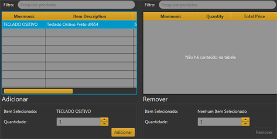

Cliente
Para a venda e o emprestimo de itens, é necessário cadastro de Clientes.
Venda
Depois de cadastrar os clientes, acesse a tela "venda" e a execute. Identificando o cliente já cadastrado,

Emprestimo
Para a execução do emprestimo é necessário que o cliente seja cadastrado como funcionário.
Abra a tela "Emprestimo" e insira o emprestimo.